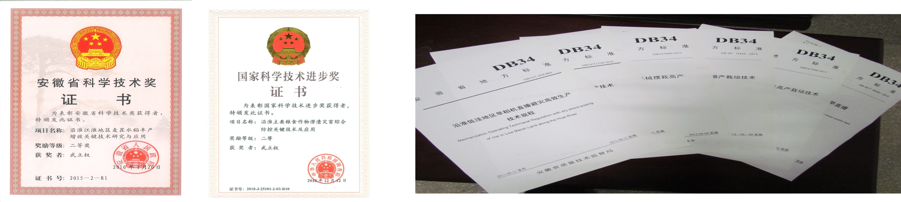
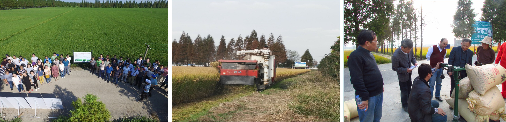

水稻精确栽培管理技术与应用
-
重点研究:
（1）工厂化育秧关键技术研究;
（2）水稻全程机械化丰产与技术研究;
（3）水稻肥水精确管理技术与应用。
课题来源: 国家重点研发计划（2016YFD0300305；2016YFD0300600；2017YFD0301305；2018YFD0300904）。
近5年主要科研奖项： 国家科技进步二等奖（2018），安徽省科学技术二等奖（2015），教育部科技进步一等奖（2014）等。
近5年主要论著： Xu et al., (2022)Agronomy. He et al., (2021)Agronomy journal, Yao et al., (2021). Journal of integrative agriculture, Ke et al (2018) Agriculture ecosystems & environment，Ke et al., (2017) Field crops research, He et al (2016) Agronomy journal。
近5年地方标准： 2022年3项，2018年2项。
全程机械化精确管理百亩攻关田： 亩均产16年968.55kg、17年719.6kg、18年917.4kg、19年1053kg

1. Combined controlled-released nitrogen fertilizers and deep placement effects of N leaching, rice yield and N recovery in machine-transplanted rice, Agriculture, Ecosystems and Environment, 2018, 265: 402–412.
2. Effects of different controlled-release nitrogen fertilisers on ammonia volatilisation, nitrogen use efficiency and yield of blanket-seedling machine-transplanted rice. Field Crops Research, 2017, 205: 147–156.
3. Effects of nursery tray and transplanting methods on rice yield. Agronomy Journal, 2016, 110 (1): 1–11.
4. 沿淮麦茬中粳（糯）稻旱直播生产技术（DB34/T1229-2022）
5. 皖西山区有机水稻生产技术规程（DB34/T3129-2018）
6. 水稻主要气象灾害调查技术规范（DB34/T3122-2018）
7. 沿淮地区中粳稻全程机械化技术规程（DB34/T2653-2016）
8. 江淮地区水稻小麦周年均衡增产栽培技术（DB34/T2104-2014）
9. 江淮地区杂交中籼稻机械摆栽高产栽培技术（DB34/T2102-2014）
